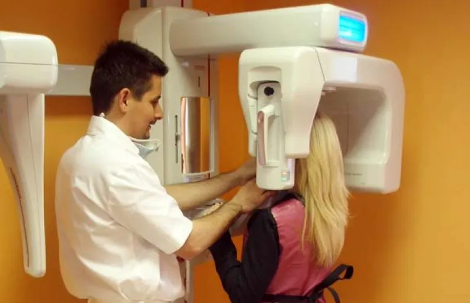
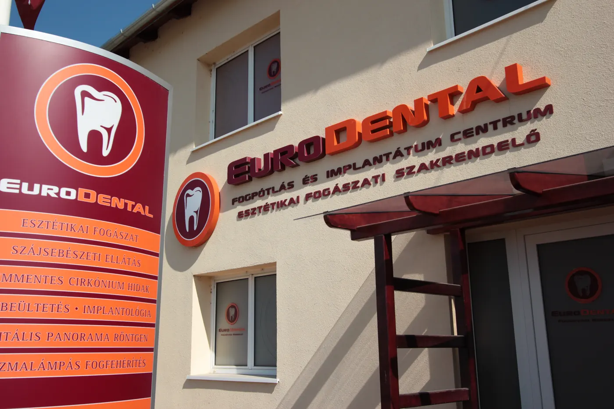
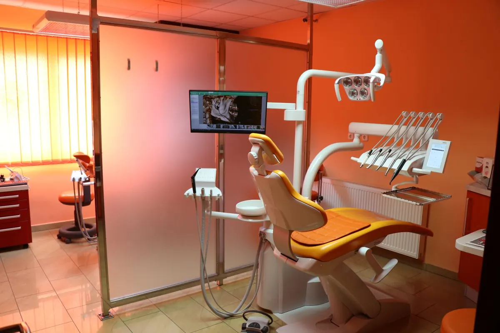
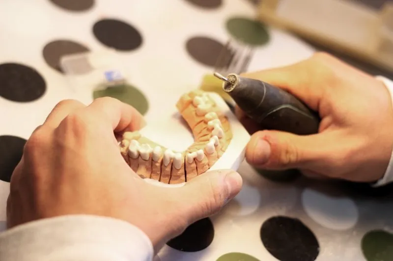
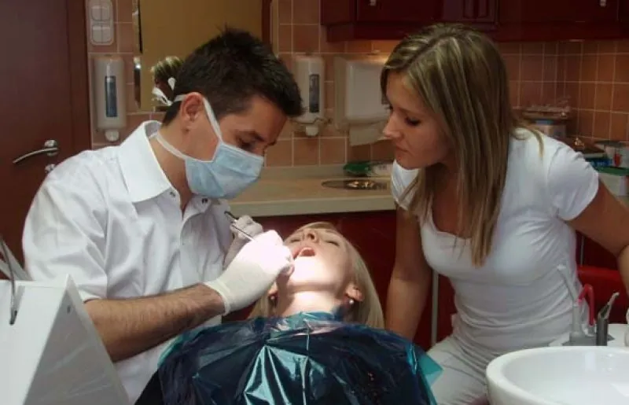
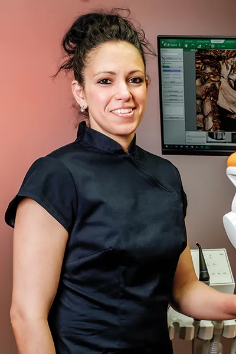
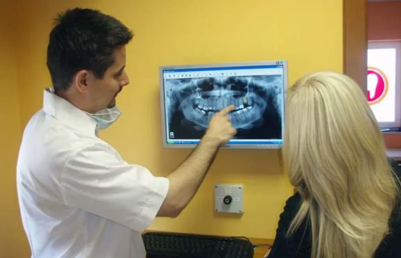

Implantáció, fogbeültetés
3D CT alapján tervezve, akár a foghúzással egy időben. Titán és teljesen fémmentes cirkónium implantátum is választható; mozgó fogsor mini implantátummal rögzíthető.
Ár80 000 Ft-tól
4,5213 Google-vélemény
Négyszékes szakrendelő a Megyeri úton, a Pécs Plázával szemben, 2006 óta. Saját fogtechnikai labor, 3D CT és digitális lenyomat egy épületben.
A 10 év írásos garancia magánbetegeknek jár tömésre, betétre, korona- és hídvázra, félévenkénti kontroll mellett. A pontos feltételek
Írásban, tömésre, betétre, korona- és hídvázra.
CAD-CAM frézcentrum ugyanabban az épületben.
Panoráma, tele- és koponya-CT helyben, azonnal.
Minden nap 8–20 között hívható sürgősségi szám.
Válassza ki, és megmutatjuk a következő lépést. Ugyanezt mondaná a telefonban az asszisztensünk is.
Telefonos bejelentkezés minden nap 8–20 között
Sürgős esetben minden nap 8 és 20 óra között hívható a +36 30 204 6065, hétvégén és ünnepnap is. Rendelési időben is szívesen segítünk akut fogfájásnál, de az előjegyzett betegek elsőbbséget élveznek, ezért érkezés előtt kérjük, telefonáljon.
A rendelkezésre állás díja; maga a kezelés az árlista szerinti, felárat nem számolunk.
Egy fog hiányánál nem kell feltétlenül lecsiszolni a szomszédos egészséges fogakat: implantátummal vagy csiszolás nélküli híddal is pótolható. Mozgó fogsornál mini implantátummal rögzíthető a meglévő protézis.
Ha rendszeresen jár, a féléves kontroll ingyenes. A fogkövet klinikai fogászati higiénikusaink távolítják el; az EMS GBT irányított biofilm-terápiánál homokfúvással dolgoznak, ezt a páciensek fájdalommentesnek írják le. A dentálhigiéniai kezelés SZÉP kártyával is fizethető.


Az EuroDental 2006 óta várja a pácienseket magánrendelésre, és a 36. számú fogászati körzet betegeit TB-finanszírozott alapellátásra. A félévenkénti ellenőrzéstől a fogpótláson és a fogbeültetésen át a váratlan fogfájásig mindent egy helyen kezelünk.
„Mi nem csak a beteg fogakat, hanem a betegünket kezeljük.”
Az egyszerű fogkő-eltávolítástól a több implantátumos pótlásig. A lenti árak 2026. január 1-től érvényes kezdőárak; a pontos árat a kezelési terv tartalmazza.

3D CT alapján tervezve, akár a foghúzással egy időben. Titán és teljesen fémmentes cirkónium implantátum is választható; mozgó fogsor mini implantátummal rögzíthető.

Fémmentes, fogszínű pótlás vállas preparálással; a vázat a saját laborunk CAD-CAM gépe marja ki. Csiszolás nélküli hídpótlás is.

Ultrahangos Piezosurgery készülékkel, vésés és kalapács nélkül, beékelődött bölcsességfognál is.
A szkenneléstől a garancialevélig minden lépés egy épületben történik: a rendelő mellett a saját fogtechnikai laborunk és CAD-CAM frézcentrumunk dolgozik.
Szakorvosi vizsgálat és felvétel a saját röntgencentrumunkban, amit együtt nézünk át.
Trios 6 szájszkenner: lenyomatkanál és öklendezés nélkül, néhány perc alatt.
A MODJAW 4D rögzíti, hogyan mozog az állkapcsa, hogy a pótlás rágáskor is kényelmes legyen.
Önnel együtt tervezzük; a vázat a laborunk CAD-CAM gépe marja ki, ezt meg is nézheti.
A számlával 10 év írásos garanciát kap, félévenkénti kontroll mellett.
Sokan érkeznek hozzánk rossz tapasztalatok után, van, aki Budapestről. Ezt írják utána a Google-on.
„Gyerekkori rossz tapasztalatok miatt szó szerint rettegek a fogorvostól. (…) Félve, elcsukló hangon csak annyit kérdeztem: »Mennyire fog fájni?« A válasz az volt: »Semennyire.« (…) A doktor úr folyamatosan mondta, éppen hol tart, és a végén már nevetve álltam fel a székből.”
213 Google-vélemény alapján; a Facebookon 94% ajánlja (80 értékelés).
„Pestről jöttem le a sok jó értékelés miatt. (…) Konkrétan semmit nem éreztem az egészből.”
Google-vélemény, foghúzás
Összes vélemény a Google-on„Én SOS-be mentem hozzájuk. Több magánorvost hívtam, senki se vállalt el. Ők voltak az egyetlenek.”
Google-vélemény, sürgős ellátás
Áraink 2026. január 1-től érvényesek, és tartalmazzák a szakorvosi, a fogtechnikai és minden egyéb költséget. A fogászati kezelések ÁFA-mentesek.
| Szakorvosi vizsgálat, góckutatás, onkológiai szűrés (első alkalommal) | 10 000 Ft |
|---|---|
| Kezelési terv, árajánlat, féléves kontroll | ingyenes |
| Digitális kis röntgen | 3 000 Ft / fog |
| Digitális panoráma-röntgen | 6 000 Ft |
| 3D koponya-CT (CBCT) | 17 000–20 000 Ft |
| Fogszínű esztétikus tömés | 10 000 Ft-tól |
|---|---|
| Fogeltávolítás | 10 000 Ft-tól |
| Korona | 29 000 Ft-tól |
| Fémmentes cirkónium vázas kerámia korona | 59 000 Ft-tól |
| Implantáció, fogbeültetés | 80 000 Ft-tól |
| Fogkő-eltávolítás polírozással | 8 000 Ft-tól |
| EMS GBT biofilm-terápia | 39 000 Ft |
| Lámpás fogfehérítés | 80 000 Ft-tól |
Az árlista tájékoztató jellegű, mert a fogpótlás költsége csak vizsgálat után számolható ki. A kezelési tervben szereplő árat 1 hónapig garantáljuk.
Készpénzzel vagy bankkártyával. Kérésre az egészségpénztára nevére állítjuk ki a számlát, így visszaigényelheti (19 pénztárral vagyunk szerződésben). SZÉP kártyát dentálhigiéniai kezelésre fogadunk el.
Magánbetegeinknek a számlával írásos garanciát adunk:
Feltétele a fogak megfelelő ápolása és a félévenkénti kontroll (súlyos fogágybetegségnél háromhavonta).
A rendelőt Dr. Vas Balázs vezeti 2006 óta. Pécs városa 2026-ban díszoklevéllel köszönte meg több mint 20 éves munkáját a város egészségügyi alapellátásában.
Címzetes főorvos, praxisvezető
„2004-ben végeztem a Pécsi Tudományegyetem fogorvos szakán. Szakmai gyakorlatot a Pécsi Fogászati Klinikán szereztem rezidens és klinikai orvosként, utána Pécsett, Budapesten és Ausztriában dolgoztam. Kiemelt területem a fogmegtartó kezelés bonyolult esetekben is, az implantációs fogpótlás és a beékelődött bölcsességfogak eltávolítása.”

Fogorvos, szakorvosjelölt
A PTE Fogorvostudományi Karán végzett 2012-ben. Fogmegtartó kezelések, gyökérkezelés, rögzített és kivehető fogpótlás, esztétikus kerámia betétek és koronák.
Fogszabályozás, előzetes egyeztetéssel.
Klinikai fogászati higiénikusok végzik a fogkő-eltávolítást és az EMS GBT kezelést.
Négy kezelő, saját röntgencentrum és fogtechnikai labor egy épületben. Kattintson a képekre a nagyobb nézethez.
Telefonos egyeztetés alapján fogadjuk Önt. Írja meg, miben segíthetünk, és munkatársunk visszahívja.
| Nap | Magánrendelés | 36. körzet (TB) |
|---|---|---|
| Hétfő | 8:30–19:00 | 13:00–18:00 |
| Kedd | 8:00–19:00 | 13:00–18:00 |
| Szerda | 8:30–19:00 | 8:00–16:00 |
| Csütörtök | 8:00–18:00 | 13:00–18:00 |
| Péntek | 8:30–19:00 | 8:00–11:00 |
| Hétvége | Sürgős ellátás, bejelentkezés telefonon 8–20 óra között | |
A 36. számú vegyes fogorvosi körzet alapellátását Dr. Vas Balázs címzetes főorvos látja el. Időpontot az előző munkanap 10 óráig díjmentesen módosíthat.

Sürgős esetben minden nap 8 és 20 óra között hívja a +36 30 204 6065-ös számot, hétvégén és ünnepnap is. Az asszisztens megmondja, a szakorvos mikor tudja még aznap fogadni. Az aznapi ellátás rendelkezésre állási díja hétköznap 10 000 Ft, hétvégén és ünnepnap 20 000 Ft; a kezelés árlista szerinti.
A kezelési terv és az árajánlat ingyenes. Feltétele a szakorvosi vizsgálat (állapotfelmérés, góckutatás, onkológiai szűrés), amely az első alkalommal 10 000 Ft. A kezelési tervben szereplő árakat 1 hónapig garantáljuk.
Magánbetegeinknek 10 év írásos garanciát adunk a számlával a fogszínű tömésekre, a kerámia és arany betétekre, valamint a vállas preparálással készült korona- és hídvázakra; a Camlog, Nobel Biocare és Ankylos implantátumokra gyári garancia van. A garancia feltétele a fogak megfelelő ápolása és a félévenkénti kontroll.
Helyi érzéstelenítésben dolgozunk; kezelésenként az első érzéstelenítés ingyenes. A szájsebészeti beavatkozásokat Piezosurgery ultrahangos készülékkel végezzük, vésőt és kalapácsot nem használunk.
Esettől függően az implantátum 3–6 hónap alatt épül be a csontba, utána készül el rá a végleges pótlás. Ha a csont minősége engedi, az implantátum a foghúzással egy időben is beültethető, és ideiglenes koronával azonnal terhelhető. Ezt a 3D tervezés és a csontvizsgálat dönti el.
Készpénzzel és bankkártyával fizethet. Egészségpénztári kártyával nem lehet fizetni, de kérésre a pénztár nevére állítjuk ki a számlát, és az összeg visszaigényelhető; 19 egészségpénztárral állunk szerződésben. SZÉP kártyát (OTP, K&H, MKB) a jogszabály szerint csak dentálhigiéniai kezelésre fogadunk el.
Az időpontot a kezelés előtti munkanapon reggel 10 óráig szankció nélkül módosíthatja vagy lemondhatja. Nagyobb, előre betervezett kezelésekre foglalót kérünk, amely beszámít a kezelés árába.
Igen. Saját pácienseink a digitális röntgenfelvételt az elkészítéskor pendrive-on vagy e-mailben megkapják. A 3D CT-felvételt kérésre CD-n, DVD-n vagy pendrive-on adjuk ki a megjelenítő szoftverrel, ennek díja 6 000 Ft.